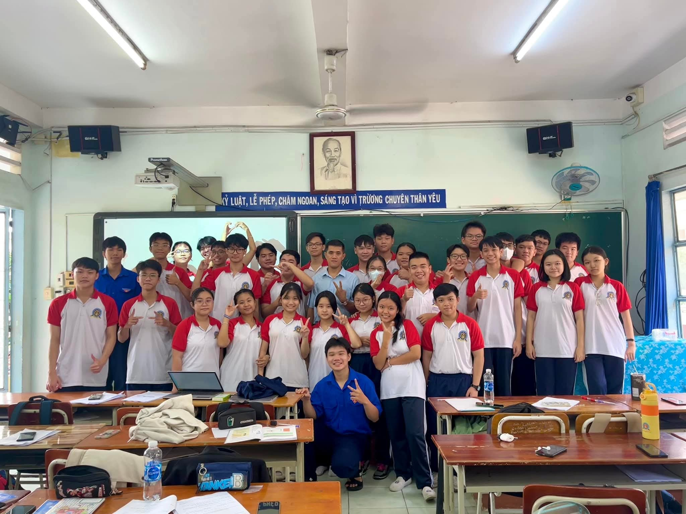

Tiếng trống trường và màu nắng cũ
Có một buổi sáng tháng Chín rất khác, khi tiếng trống trường không còn là âm thanh báo hiệu những giờ học mệt mỏi, mà là nhịp đập khởi đầu cho một hành trình mang tên "Tuổi mười bảy". Chúng ta đứng đó, giữa sân trường ngập nắng, tà áo trắng bay trong gió nhẹ, mang theo cả những ước mơ ngây ngô nhất của cuộc đời. Năm lớp 11 bắt đầu bằng những cái chạm tay rụt rè, những nụ cười làm quen chưa kịp gọi tên.

Gói lại tiếng cười trong ngăn bàn nhỏ
Thanh xuân của chúng mình không phải là điều gì quá lớn lao. Nó nằm ở những mảnh giấy nháp chuyền tay nhau dưới ngăn bàn, là những giờ ra chơi ngắn ngủi nhưng đầy ắp tiếng cười. Là góc hành lang nơi ta từng đứng đợi một bóng hình, là những lần cùng nhau ăn vụng trong giờ học để rồi thót tim khi thầy cô bước vào. Mỗi mảnh ghép ấy, dẫu vụn vặt, nhưng lại vẽ nên một bức tranh rực rỡ nhất về tình bạn.
Hẹn gặp lại nhau tại mùa hạ rực rỡ nhất
Rồi tiếng ve cũng thưa dần, những trang lưu bút cũng đến lúc phải khép lại. Chúng mình rồi sẽ lớn lên, sẽ đi trên những con đường khác nhau, dưới những bầu trời xa lạ. Nhưng dù có đi đâu, hãy luôn nhớ rằng chúng ta đã từng có một thanh xuân nồng cháy đến thế. Đừng buồn vì nó đã kết thúc, hãy mỉm cười vì chúng ta đã từng là một phần của nhau. Gửi lại tuổi 17 một lời chào, gửi lại lớp 11 một lời cảm ơn chân thành nhất.